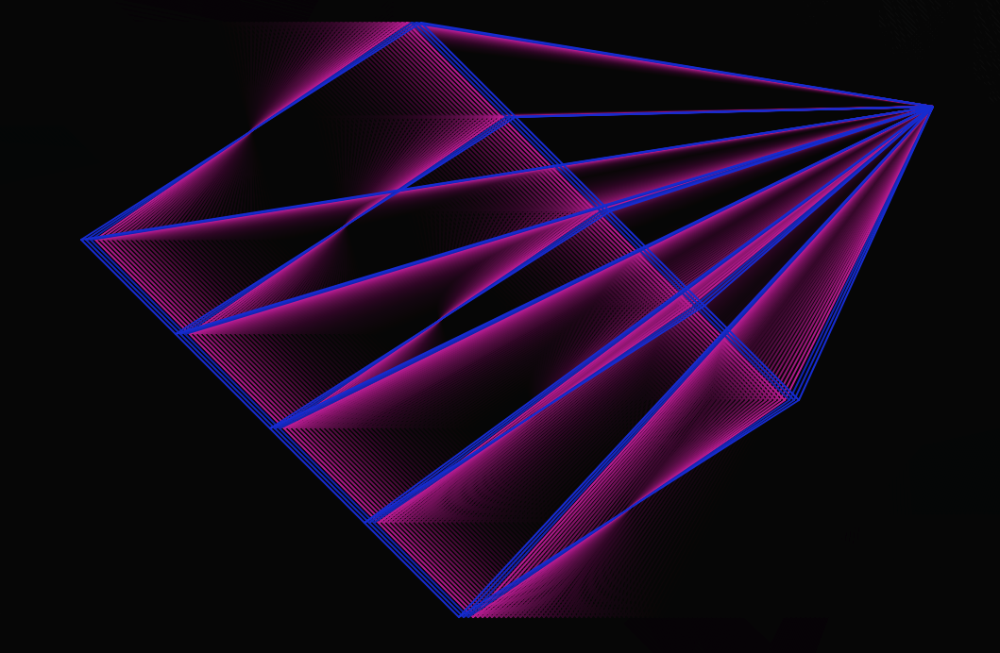

Código ↓
Pantalla completa ↓

Código ↓
Pantalla completa ↓
Reflección: Me gustaron las obras de los cuatro artistas, es muy interesante como parten de una misma herramienta, la programación, pero logran resultados muy distintos. Me parecieron más interesantes las propuestas de Gilberto Esparza, Quayola y Memo Akten. Los robots de Gilberto son casi nuevos seres que salen de la basura con vida propia como consecuencia de la contaminación, es muy divertido y también lo veo como una crítica a la vida de consumo masivo que llevamos. De Quayola y Akten creo que está muy buena la interpretación que hacen de esas personas en movimiento, las transforman en un montón de figuras que se vuelven un poco abstractas y te dan una experiencia muy diferente a la que tenemos cuando observamos esos saltos, danzas y acrobacias. Me parece genial que se puedan hacer estas cosas con la tecnología, algo como capturar el movimiento de un objeto puede terminar en una cantidad increíble de resultados creativos que nacen de lo mismo. Estuve mirando trabajos de Quayola y Akten por separado. Los dos trabajan mucho capturando imágenes de obras clásicas o de la naturaleza y las transforman en algo completamente distinto, o las reproducen en medios diferentes al original con resultados que me despertaron bastante interés en aprender como se logran esas obras.